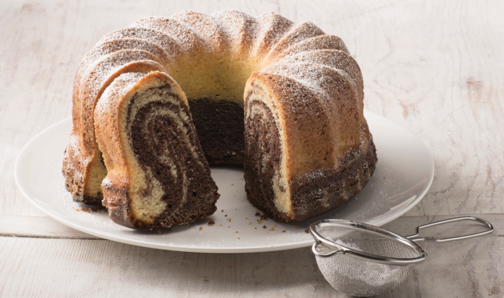

Marmorkuchen Rezept

Beschreibung
Das perfekte Einsteigerrezept für den ersten Kuchen! Absolute Erfolgesgarantie!
Zutaten
Für den Vanille-Teig
- 200g weiche Butter
- 180g Zucker
- 1Prise Salz
- 4 Eier
- 280g Weizenmehl (Type 405)
- 2TL Backpulver
- 70ml Milch
Für den Kakao-Teig
- 3EL Backkakao (ca. 20g)
- 1Pk Vanillezucker
- 2EL Milch
Außerdem
- 1EL Mehl für die Form
- Puderzucker zum Bestäuben
Zubereitung
-
Ofen auf 180 Grad Ober-/Unterhitze (Umluft: 160 Grad) vorheizen.
-
Eine Kastenform (25 cm) einfetten.
-
Mehl hineingeben und durch Schwenken der Kastenform verteilen
-
Zucker und Salz mit dem Schneebesen eines Handrührgeräts auf höchster Stufe 2 Minuten schaumig-weiß schlagen.
-
Eier nacheinander nachzugeben und auf höchster Stufe weiterschlagen.
-
Mehl und Backpulver mischen und abwechselnd mit der Milch in den Teig rühren.
-
Drittel des Teiges in eine Schüssel umfüllen.
-
Kakao, Vanillezucker und Milch in einer kleinen Schüssel glattrühren.
-
Kakao-Mischung zum Teig geben und glattrühren.
-
Die Hälfte des hellen Teigs esslöffelweise in die Form geben.
-
Die Hälfte des Kakaoteig darauf geben und glattstreichen.
-
Übrigen hellen Teig darauf geben und mit dem restlichen Kakaoteig bedecken.
-
Den Teig mit Hilfe einer Gabel einige Male von unten nach oben durch alle Schichten hindurch marmorieren.
-
Oberfläche erneut glattstreichen.
-
Kuchen unteren Drittel des vorgeheizten Ofens für ca. 25 Minuten anbacken.
-
Dann mit einem scharfen Messer mittig die Oberfläche etwa 1 cm tief einschneiden.
-
Dadurch bekommt der Kuchen einen gleichmäßigen Riss in der Oberfläche.
-
Kuchen für ca. weitere 30 Minuten fertig backen.
-
Nach Ende der Backzeit mit einem Holzstäbchen mittig in den Kuchen stechen, um zu überprüfen, ob der Kuchen durchgebacken ist.
-
Wenn noch Teig am Holzstäbchen klebt, die Backzeit um ca. 5 Minuten verlängern und danach erneut testen.
-
Kuchen komplett auf einem Kuchenrost erkalten lassen.
-
Die Ränder des Kuchens mit Hilfe eines kleinen Messers von der Form lockern, dann stürzen.
-
Kuchen auf eine Kuchenplatte zurückstürzen und vor dem Servieren mit etwas Puderzucker bestäuben.
-
Der Marmorkuchen aus der Kastenform ergibt ca. 12 Stücke und hält sich luftdicht verpackt bei Zimmertemperatur für mindestens 4 Tage.